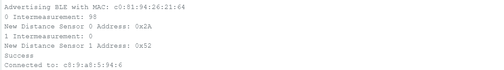

Lab 3
ToF Sensor Connection
This is what my setup looks like for a ToF sensor and the multiport. On the other two multiport headers
I can attach my other ToF sensor and my IMU. The blue wire connects to SDA and the yellow wire connects
to SCL.
Artemis Scanning for I2C
I can use getI2CAddress() to retrieve the ToF sensor's I2C address. It's consistent with the address on Pololu's Website, and
the header file of Sparkfun's Arduino library header file. When I scan for I2C addresses, I get the address
0d82 or 0x52.
According to ST's datasheet and Pololu's technical documentation, this is the default I2C address for this sensor.
If I want to use more than one sensor on the same I2C network, then I need to set the address of one of my
sensors to something else. To do so, I need to disable one sensor, set the I2C address of the other one over the
I2C line, and then enable the other sensor. This way, one of them will be left untouched, and the other one will
have the new address, allowing me to use both of them on the same network.
Sensor Data
Using the I2C protocol, I can retrieve data from the sensor. I can also use getDistanceMode() to read the
distance mode that's default with Adafruit's library. According to the header file, 2 corresponds to
"long distance mode", so I can measure up to 4m with this sensor right now, although my error is a little
higher than it could be. The tradeoff between the different modes is between maximum distance and
accuracy, so for fine sensing purposes, short-distance mode would be better. This would be for like the
side sensor of the car while it maps the room. The long-distance sensor would be better for high-speed
navigation like when it's doing stunts.
Testing Sensor Reliability
To test the sensor, I placed it along a measuring tape, and moved an obstacle in 100 mm increments from
100 mm to 2500 mm. Then, I took the average and variance of those measurements to collect my
reliability data for the ToF sensor. This test was conducted on long-distance mode.
Here is my test setup:
The cardboard board was moved in 100 mm increments. Here is the raw data:
At each plateau that you see, I took the average value and variance:
Based on the graph, the sensor is fairly accurate up until around 1.5 meters. It undershoots a tiny bit,
but this undershoot is fairly constant. Also, the variance in the measurement is very low. Past 1.5
meters, the sensor undershoots more, and the variance of the measurement increases. You can see this
in the raw data as noise after the ~350th sample.
Range
Although the sensor is supposed to work up until 4 meters in long-distance mode, I was only able to get
up to about 2.5 meters before the sensor's noise rendered it unusable. According to the
Pololu Website, the sensor doesn't work that well in long-distance mode with background light,
so I believe this was the cause. The hallway that I was testing in had windows and artificial lighting,
which probably added noise to the sensor's readings.
Accuracy
As mentioned before, the cardboard material, the sensor has a tendency to undershoot its readings,
especially at longer range. Here is a plot of sensor error as a function of distance in millimeteres.
Notice how the error scales linearly with distance, causing the error measurement to remain fairly
stable. At close ranges, the error jumps up significantly. This is possibly due to the fact that
this data was taken in long-distance mode. Perhaps short-distance mode has less error.
Here is a plot of the same test with short-distance mode:
And the error as a function of distance:
In long-distance mode, the error spikes in the negative direction at around 300 mm. In short-distance
mode, the error spikes around 100 mm, so short-range mode definitely retains good measurement for longer.
I think for the wall-stop thing I'm going to use short-range mode for the high data quality.
Repeatability
The variance for the ToF sensor is fairly low when the measurement is not at the far limit of the
sensor's ability, so usually the sample-to-sample repeatability for each measurement is quite good.
As for the sensor's repeatability between tests, the datasheet said that the sensor works better at
lower light levels, so the sensor's error is probably also a function of how much background light
there is. I'm guessing the background light acts as a noise floor for the sensor.
Ranging Time
I know that the sensor gives me data pretty slowly, but I'm not sure about the variance. Here's a
plot of the time between sensor readings:
According to the data, 89% of the samples are 50-60 ms apart, and 11% of the samples have a large amount
of time elapse between each reading. The lags last between 150-750 ms. They also seem quantized at 150, 250,
350, 450... ms, which is weird to me. This could cause control issues in the future.
Two ToF Sensors
This one was kind of tough because I had to experiment with a bunch of different ways to sample the data. I
originally tried sampling whenever both sensors were ready, but this slowed down my sampling rate A TON.
So, I tried sampling each sensor asynchronously, and that improved my system, but for some reason I was getting
100-200 ms between each sample, with I found unusable. I'll get into the details later of how I solved this,
but for now, here is how I asynchronously sampled both sensors:
Using if statements allowed me to check if my sensors were ready without hanging on a while loop, which
would severely slow down my sampling rate.
Also, here is the output of my initialization that shows me that the sensors are both initializing correctly
with different addresses.

How I Increased Data Rate
As mentioned before, my sampling period was around 100-200 ms, with spikes up to 700 ms, which is terrible.
I noticed that the sampling periods were quantized into multiple of 100 ms, so I assumed something was
artificially slowing down my sensors. After looking into the source code of the library, I found that
the sampling period is determined by the "intermeasurement period" and "timing budget". After changing these
from 100 ms to 20 ms (I think I can go down to 15 ms as well), I got *much* faster sampling rates. Here is
a histogram of the new sampling periods of my sensor:
I'm getting about 30 Hz sampling from one ToF sensor, and I think it could be better. I'll do more testing later.
Testing
To test if both sensors were sampling correctly in parallel, I taped the two sensors on opposite sides of a box and
walked back and forth between the walls of a hallway.
The idea is that I should see two sinusoidal-ish waves from each sensor in isolation, and the sum of the two
sensors should yield a constant value which equals the width of the hallway (2250 millimeters). Here is the data:
As you can see, the two sensors move back and forth, and the sum hovers just shy of 2250 mm.
Discussion on Speed and Limiting Factor
I mentioned before that my original attempts at collecting data from both sensors was really slow, and I sped
it up by asynchronously gathering data and reducing the time budget + intermeasurement period. Asynchronously
gathering data is important for faster data collection, but it's also crucial so that I can do Kalman filter and
control calculations later on.
To test my timing, I printed the time in milliseconds every time the main while loop ran, and then printed with
a new line each time new data was recorded. Here are the results:
The first thing to note is that the first time recorded is 0ms, indicating that data collection has just begun.
Also, sensor 0 records once, then sensor 1 records three times, and then sensor 0 records twice. This is because
the sensors record asynchronously. I posted this earlier, but here's the code that allows me to record data in
parallel:
The full loop usually executes in 2 ms, but it can sometimes take up to 7 ms. If this becomes an issue in the future,
then I'll go line-by-line and check what's taking so long on the MCU. Also, when data is ready, the code takes longer
to execute. This makes sense because there are just more instructions, but I'm guessing clearInterrupt() and
stopRanging() take the longest because they are probably blocking while writing to the I2C bus. There are also the
print statements slowing things down as well.
The main thing that's limiting my sampling rate is definitely just waiting on checkForDataReady(). This
is controlled by the sensor's time budget and intermeasurement period. I'm currently at 20 ms for this.
I tried bringing it down to 15 ms, but that didn't work.
Collecting IMU and ToF Data
I added the program from my IMU code to my ToF code so that I'm collecting both at the same time. Here is the
IMU data that I collected:
And here is the ToF sensor data that I collected from both sensors:
Finally, here are my three sensors initializing one after another: